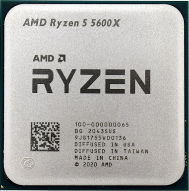

Os processadores mais comercializados atualmente
Agora que já sabemos como identificar os processadores da Intel e da AMD, vejamos quais são os
processadores mais comercializados atualmente.
Intel Core i9 (10900 e 12900)
O processador Core i9 da Intel é top de linha, pois o Core i9 é a linha mais atual e potente no mercado
da tecnologia dos processadores da Intel, ou seja, quanto maior for o número, mais poderoso é o
processador. Assim, o Core i9 é mais poderoso do que o Core i3, Core i5, e Core i7. Para termos uma
ideia, os processadores Core i9 possuem até 18 núcleos, e quanto mais núcleos, mais tarefas simultâneas
podem ser executadas. Essa geração de processadores possuem uma frequência que varia de 3.60GHz a
5.20GHz, fazendo com que o computador não trave e trabalhe com mais agilidade.
Participando da linha Core i9, há dois processadores que estão em alta no mercado: o processador Intel
Core i9 10900 e o processador Intel Core i9 12900.
Mas se eles são top de linha, qual deles é o melhor? Bom, o Intel Core i9 12900 possui o número 12 que é
maior do que o Intel Core i9 10900 que possui o número 10. Esses números indicam a geração que esse
processador pertence dentro do Core i9. Assim, quanto maior for o número, mais recente é a geração, e
consequentemente, melhor será o desempenho do processador. Vejamos agora as diferenças entre essas duas
gerações de processadores da Intel Core i9.
O Intel Core i9 10900, lançado em abril de 2020, suporta uma capacidade máxima de memória de 128GB, uma
memória cache de 20MB, 10 núcleos, 20 threads e sua frequência turbo max pode chegar a 5.20GHz. E custa
mais ou menos R$3500,00.
Já o Intel Core i9 12900, lançado em janeiro de 2022, também suporta uma capacidade máxima de memória de
128GB, possui uma memória cache de 30MB, 16 núcleos, 24 threads, e sua frequência turbo max pode chegar
a 5.10GHz. E custa mais ou menos R$4350,00.
Tanto o Core i9 10900 quanto o Core i9 12900 possuem uma Frequência da Tecnologia Intel® Turbo Boost Max
3.0 de 5.10 GHz. Essa tecnologia identifica os núcleos mais rápidos do processador e direciona suas
cargas de trabalho mais críticas para eles. A linha Core i9 é recomendada para quem trabalha com criação
e edição de vídeos e fotos, e também para gamers, devido sua alta capacidade de processamento, evitando
travamentos e melhorando o rendimento do usuário.
Podemos notar que ambos são parecidos em algumas especificações, mas que o Core i9 12900 possui maior
desempenho do que o Core i9 10900, o que deixa claro que por ser de uma geração mais recente ele se
torna melhor. Entretanto, por ter um alto custo, ele não vale a pena ser comprado para tarefas mais
simples, como apenas acesso a internet, edição de texto e planilhas, jogos mais leves e edição de vídeos
e fotos que não demandam um processador top de linha.
AMD Ryzen 9
O Ryzen 9 é um dos modelos de ponta da AMD que busca bater de frente com seu rival Core i9 da Intel.
Contando com 12 núcleos de CPU, 24 threads, clock básico de 3.7 GHz e memória DDR4, essa CPU, em sua
versão 5900x, foi lançada no final de 2020 com a promessa de ser o melhor processador do mundo para
jogos. Possui ainda uma arquitetura Zen 3 de 7 nm que busca maior eficiência energética sem perder a
alta performance. Em busca pelo modelo 5900x para compra online, a média de preço está em torno de R$
3200,00 (De R$ 2797,00 a R$ 3859,90, variando conforme a loja).
AMD Ryzen 7 5800

O Ryzen 7 é uma linha de processadores da AMD que concorre com a linha de processadores da Intel Core i7,
sendo assim, a linha Ryzen 7 é de alto nível que possui um ótimo desempenho para usuários que necessitam
de usar gráficos, vídeos e fotos que dependem de eficiência e bom custo benefício.
Intel Core i7 (9700 e 12700)
O Intel Core i7 é uma linha de processadores de alto nível que possui desempenho incrível para placas
gráficas dedicadas. A placa dedicada não é acoplada à placa mãe e conta com uma memória de vídeo
própria, o que permite que ela não tenha que dividir a memória RAM com o processador. É um tipo de peça
desenvolvido para obter um desempenho superior no quesito processamento gráfico. Assim, essa linha de
processadores também é indicada para quem trabalha com recursos gráficos, como edição de vídeos e fotos
em alta qualidade, e para gamers. Dessa linha de processadores duas gerações se destacam atualmente:
Core i7 9700 e Core i7 12700. Vejamos as principais características desses dois processadores.
O Intel Core i7 9700, lançado em abril de 2019, suporta uma capacidade máxima de memória de 128GB, uma
memória cache de 12MB, 8 núcleos, 8 threads e sua frequência turbo max pode chegar a 4.70GHz. E custa
mais ou menos R$2100,00.
Já o Intel Core i7 12700, lançado em janeiro de 2022, também suporta uma capacidade máxima de memória de
128GB, possui uma memória cache de 25MB, 12 núcleos, 04 threads, a frequência turbo max pode chegar a
4.90GHz, e a frequência da Tecnologia Intel® Turbo Boost Max 3.0 de 4.90 GHz. E custa mais ou menos
R$2990,00.
Ambos os processadores possuem um bom custo e benefício, principalmente para quem precisa trabalhar com
gráficos, vídeos e fotos com alta resolução e qualidade, pois possuem alto desempenho e um preço mais
acessível do que um Core i9.
Intel Core i5-11400
Essa CPU apresenta 6 núcleos e 12 threads. A frequência básica em processador, ou seja, a frequência com
que seus transistores abrem e fecham, é de 2.6 Ghz. No site do fabricante é apresentado o preço
recomendado ao cliente de USD 182, que corresponde a R$ 981,45 na cotação atual do dólar comercial.
Ainda que a família de processadores Core i5 tenha sido lançada em 2009, o modelo i5-11400 teve seu
lançamento em julho de 2021, evidenciando o constante esforço de aprimoramento e desenvolvimento da
Intel com seus modelos, até mesmo os não tão robustos. Sendo assim, esse é um processador indicado tanto
para uso doméstico quanto para realização de tarefas que demandam um pouco mais como edição de vídeo e
jogos. Todavia, não é o modelo mais indicado quanto a demanda é por desempenho de ponta.
AMD Ryzen 5 5600X

O Ryzen 5 é uma linha de processadores da AMD que concorre com a linha de processadores da Intel Core i5,
sendo assim, a linha Ryzen 5 é de nível intermediário que possui um ótimo desempenho para usuários que
não necessitam tanto de alto desempenho para gráficos, edição de fotos, vídeos e também de jogos.
Um desses processadores da linha Ryzen 5 é o AMD Ryzen 5 5600X, lançado em maio de 2020, possui uma
memória DDR4, uma memória cache L2 de 3MB ou uma memória cache L3 de 32MB, 6 núcleos, 12 threads e pode
alcançar até 4.6GHZ de Clock de Max Boost. Esse processador custa mais ou menos R$1399,90. Como é um
processador de nível intermediário possui um ótimo custo e benefício para usuários que mexem com edição
de vídeo e fotos que demandam alto desempenho, e também é recomendado para jogos que não são de alta
performance.